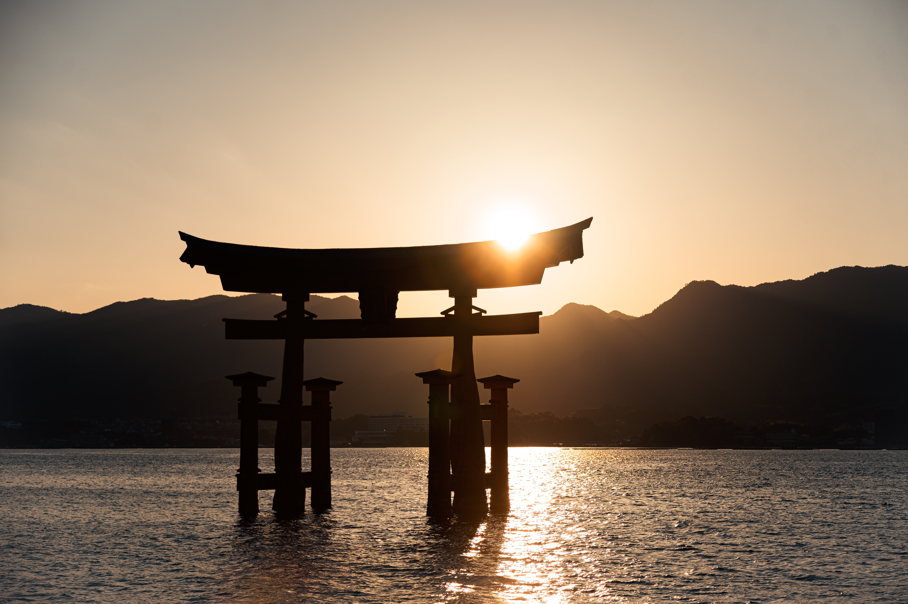
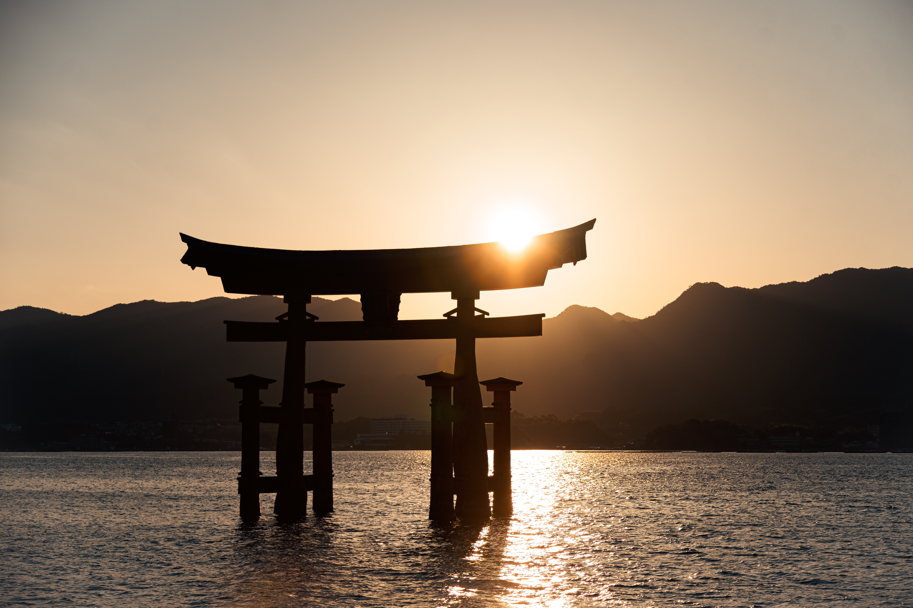
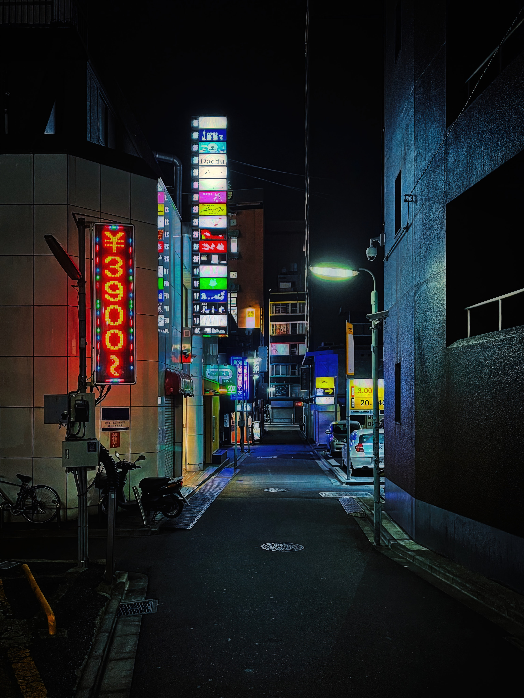
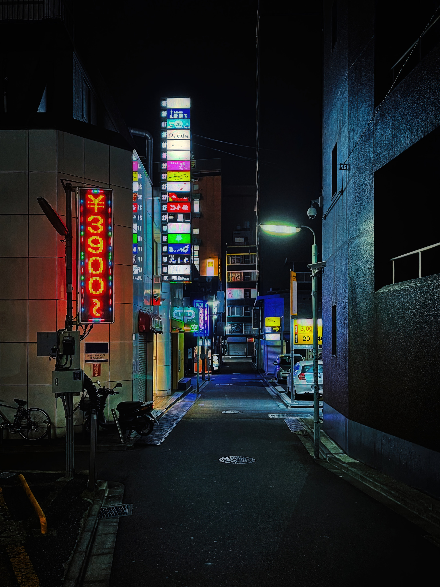

Capital de Francia y de la región que ocupa, la Isla de Francia, París tiene una población de casi doce millones de habitantes, la más grande de Europa, y una superficie de 14.518 kilómetros cuadrados en zona urbana. Está situada al norte de Francia, concretamente al norte de la gran curva del río Sena.
Visite Nuestra ciudad hermosa
Viaje a Japón
Es uno de los destinos más adictivos del planeta. Es cierto, viajar a Japón supone fascinarse gracias a esa mezcla de tradiciones milenarias con tecnologías de última vanguardia. En pocos lugares del planeta podrás experimentar a la vez lo que significa moverte por una metrópolis futurista como Tokio, divisar las cumbres nevadas del monte Fuji desde un onsen, admirar la delicadeza de un jardín japonés en Kanazawa, escuchar las oraciones en algún templo budista de Kioto al atardecer o degustar el sushi más fresco del mundo.


 

 
